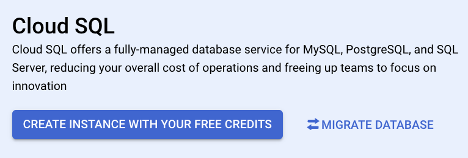
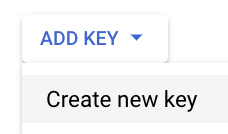

Enable Cloud SQL Database
This guide outlines the steps to enable and configure a Cloud SQL instance in Google Cloud Platform (GCP). We will create a PostgreSQL database, configure access, and connect using R.
Note: The database we are creating will not be publicly accessible for security reasons. It can only be accessed through the Google Cloud environment or via secure connections like the Cloud SQL Proxy.
Prerequisites
Before starting, ensure you have:
Important Note on Cloud SQL Free Usage
Cloud SQL is not included in the GCP Free-Tier but is available during the Free-Trial period, which provides $300 in credits to explore GCP services. This means you can create and use a Cloud SQL instance during the trial without incurring charges, as long as your usage stays within the credit limit. After the trial period or if credits are exhausted, you will be billed for any usage. Cost estimates are shown during the setup process, providing insight into potential charges based on your selected configuration.
Let’s get started!
- Log in to the Google Cloud console and open the Navigation menu (three horizontal lines icon).
- Select “SQL”.
- Click “CREATE INSTANCE WITH YOUR FREE CREDITS”.

- Click “Choose PostgreSQL”, unless you prefer another database engine.
- Click “ENABLE API”.
- Choose your desired SQL edition. As we are working on a simple project, we select “Enterprise” in this example.
- Choose your desired SQL Virtual Machine (VM). For this example we are going to select the smallest edition preset, the Sandbox VM (2 vCPU, 8 GB RAM, 10 GB Storage, and single zone). These settings can be changed later.
- Specify the “Database version” (PostgreSQL 16 in this example), fill in an “Instance ID”, and set an admin “Password” for the “postgres” user.
- Select the instance “Region” and “Zonal availability”. For this example, “us-central1” (as is the same as we used in the previous posts), and “Single zone” as this app is a small project (not widely used yet, we can change this in the future).
- Review the instance settings summary.
- Take a look at the “Pricing estimate”.
- Click “CREATE INSTANCE”.
- Wait for the instance creation to complete.
- Once the green checkmark appears, your instance is ready.
- Now, let’s create our first database in the newly created instance. Click “Databases”.
- Click “CREATE DATABASE”.
- Set the “Database Name” and click “CREATE”.
- Verify the new database is listed.
- Now, let’s create a new user for the database. Click “Users”.
- Click “ADD USER ACCOUNT”.
- Fill in the new “User name” and “Password”, and click “ADD”.
- Verify the new user was created.
- Now, let’s create our first table in the database. Click “Cloud SQL Studio”.
- Login to the database using the “User” and “Password” you created in step 21.
- Open an “Editor” tab.
- Run SQL commands to create your desired tables.
- Now, in order to be able to access the database from outside GCP, we will need to get the JSON keys for a GCP Service Account. In GCP’s “Search” panel, type “Service Accounts”, and click on that service. If you don’t have a service account to use, create a new one, by clicking on “CREATE SERVICE ACCOUNT”.
- Create the JSON keys for the service account. Click on the “Actions” (three dots).
- Click “Manage keys”.
- Click “ADD KEY” and then “Create new key”.

- Check “JSON” and click “CREATE”. After creation, the JSON key will be downloaded by your browser, move this key file to
~/.gcp/, e.g.,$ mv ~/Downloads/every-single-country-b2e753a1eee3.json ~/.gcp/everysinglecountry-sa-key.json.
- Now, to be able to access the database locally, we will use the
cloud-sql-proxycommand, for that we need to enable the “Cloud SQL Admin API”. In GCP’s “Search” panel, type “Cloud SQL Admin API”, and click on that service.
- Enable the “Cloud SQL Admin API” service by clicking “ENABLE”.
- List the available projects.
$ gcloud projects list
PROJECT_ID NAME PROJECT_NUMBER
every-single-country Every Single Country 122108936732- Set the active project, in case it wasn’t already set.
$ gcloud config set project every-single-country
Updated property [core/project].- Enable the Cloud SQL Admin API, to be able to use the
cloud-sql-proxycommand.
$ gcloud services enable sqladmin.googleapis.com
Operation "operations/acat.p2-974569654945-b833df22-17ed-4724-8615-b9c271849917" finished successfully.- Create a Cloud SQL instance.
$ gcloud sql instances create everysinglecountry \
--database-version=POSTGRES_16 \
--tier=db-custom-2-8192 \
--region=us-central1 \
--storage-size=10GB \
--edition=ENTERPRISE \
--backup \
--enable-point-in-time-recovery
Creating Cloud SQL instance for POSTGRES_16...done.
Created [https://sqladmin.googleapis.com/sql/v1beta4/projects/every-single-country/instances/everysinglecountry].
NAME DATABASE_VERSION LOCATION TIER PRIMARY_ADDRESS PRIVATE_ADDRESS STATUS
everysinglecountry POSTGRES_16 us-central1-b db-custom-2-8192 34.136.96.114 - RUNNABLE- Create a database in the instance.
$ gcloud sql databases create everysinglecountry --instance=everysinglecountry
Creating Cloud SQL database...done.
Created database [everysinglecountry].
instance: everysinglecountry
name: everysinglecountry
project: every-single-country- Create a new user for the database.
$ gcloud sql users create everysinglecountry \
--instance=everysinglecountry \
--password=YOUR_DB_PASSWORD
Creating Cloud SQL user...done.
Created user [everysinglecountry].- Create a service account to be used by
cloud-sql-proxy.
$ gcloud iam service-accounts create everysinglecountry-sa \
--description="EverySingleCountry Service Account" \
--display-name="everysinglecountry-sa"
Created service account [everysinglecountry-sa].- Assign needed IAM Policy Bindings to the service account.
$ gcloud projects add-iam-policy-binding every-single-country \
--member="serviceAccount:everysinglecountry-sa@every-single-country.iam.gserviceaccount.com" \
--role="roles/cloudsql.client"
Updated IAM policy for project [every-single-country].
bindings:
- members:
- serviceAccount:everysinglecountry-sa@every-single-country.iam.gserviceaccount.com
role: roles/cloudsql.client
- members:
- serviceAccount:firebase-service-account@firebase-sa-management.iam.gserviceaccount.com
- serviceAccount:service-974569654945@gcp-sa-firebase.iam.gserviceaccount.com
role: roles/firebase.managementServiceAgent
- members:
- serviceAccount:firebase-adminsdk-efpkq@every-single-country.iam.gserviceaccount.com
role: roles/firebase.sdkAdminServiceAgent
- members:
- serviceAccount:firebase-adminsdk-efpkq@every-single-country.iam.gserviceaccount.com
role: roles/iam.serviceAccountTokenCreator
- members:
- user:everysinglecountryproject@gmail.com
role: roles/owner
etag: BwYo24Y3_jQ=
version: 1- Generate a JSON key for the service account .
$ gcloud iam service-accounts keys create ~/.gcp/everysinglecountry-sa-key.json --iam-account=everysinglecountry-sa@every-single-country.iam.gserviceaccount.com
created key [6b71b4f4895ead65646249bf76c05093467669bf] of type [json] as [/Users/jcrodriguez/.gcp/everysinglecountry-sa-key.json] for [everysinglecountry-sa@every-single-country.iam.gserviceaccount.com]Connect Locally to the Database
The Cloud SQL database we just created is not publicly accessible and can only be reached within the GCP environment. To connect to your database locally, follow these steps:
- Get the instance’s connection name.
# Get the connection name of the Cloud SQL instance.
$ gcloud sql instances describe everysinglecountry --format="get(connectionName)"
every-single-country:us-central1:everysinglecountry- Setup a tunnel to access locally the database, using a Cloud SQL Proxy.
# Use Cloud SQL Proxy to create a secure connection to the database.
$ cloud-sql-proxy every-single-country:us-central1:everysinglecountry --credentials-file=/Users/jcrodriguez/.gcp/everysinglecountry-sa-key.json
2024/12/26 16:49:19 Authorizing with the credentials file at "/Users/jcrodriguez/.gcp/everysinglecountry-sa-key.json"
2024/12/26 16:49:21 [every-single-country:us-central1:everysinglecountry] Listening on 127.0.0.1:5432
2024/12/26 16:49:21 The proxy has started successfully and is ready for new connections!At this point, the Cloud SQL Proxy is listening on localhost:5432, and you’re ready to connect to your database.
- Connect to the database in R.
Now that the proxy is set up, you can connect to your database locally from R using the {DBI} package and the appropriate PostgreSQL driver. Here’s an example connection:
cn <- DBI::dbConnect(
drv = RPostgres::Postgres(),
dbname = "everysinglecountry",
host = "localhost",
user = "everysinglecountry",
password = "YOUR_DB_PASSWORD",
port = 5432
)
DBI::dbListTables(cn)
DBI::dbDisconnect(cn)Enable Cloud SQL Access for your Shiny App
If you have deployed your Shiny app on a GCP Cloud Run service, as demonstrated in our blog post Deploy Your Shiny App on Google Cloud Platform, you need to grant it access to your Cloud SQL database. To do this, add the --add-cloudsql-instances flag to your deployment script:
--add-cloudsql-instances=every-single-country:us-central1:everysinglecountry
The updated deployment command should look like this:
$ gcloud run deploy everysinglecountry \
--image gcr.io/every-single-country/everysinglecountry:latest \
--platform managed \
--region us-central1 \
--allow-unauthenticated \
--add-cloudsql-instances=every-single-country:us-central1:everysinglecountryThis configuration allows your app to connect “locally” to the database via the Cloud SQL instance. For details on connecting to the database locally, refer to the previous section.
Conclusion
Enabling and configuring a Cloud SQL database in Google Cloud Platform is a straightforward process that provides a robust and secure environment for your data. By following this guide, you’ve set up a PostgreSQL instance, created a database, added users, and connected to it locally using the Cloud SQL Proxy. These steps ensure that your database is accessible only through secure methods, enhancing both performance and security.
As you deploy your applications, such as Shiny apps, you can seamlessly integrate them with your Cloud SQL database to manage and analyze data efficiently. GCP’s powerful tools and scalability options make it an ideal platform for hosting and managing your databases.